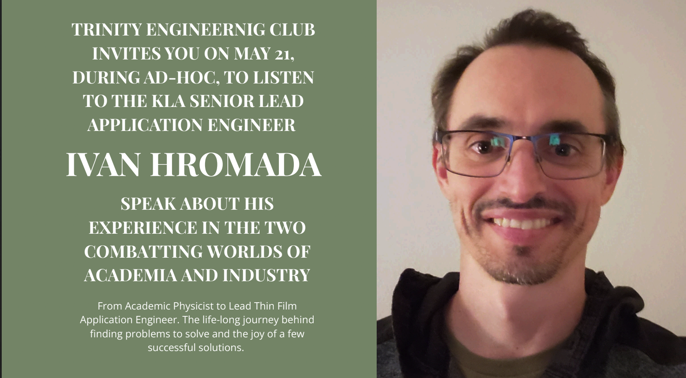

2023 – 2027
Model Congress
I have won numerous awards in this debate format and have loved spending time with my team.
School Pursuits
Some of the most meaningful parts of my education have happened outside the classroom. Clubs, performances, athletics, leadership, and creative projects have challenged me to work with others, solve unfamiliar problems, and continually discover new interests.
I've always enjoyed exploring opportunities that allow me to grow in different ways. Whether that means creating something artistic, leading a group, competing, volunteering, or learning an entirely new skill, I value experiences that push me outside my comfort zone.
2023 – 2027
I have won numerous awards in this debate format and have loved spending time with my team.
2023 – 2027
I have enjoyed athletics since a kid, and have happily engaged in a variety of Track and Field events at my school.
My Athletics →2023 – 2027
I have worked as a Staff Editor on Fear Symmetry, our creative writing magazine, since I was a Freshman.
2021 – Present
My father and I’s publishing company, where we produce comic books and children’s books and publish our own works. We have done many fun things, including present our comic books and children’s books at New York Comic Con every year starting since Freshman year. My Egypt the Cat series is published here.
Visit Edenseek →2014 – Present
I have played piano since I was a kid, and have always dabbled in songwriting. I love making music and got more into it in high school.
My Music →2023 – 2027
I am a Student Co-Chair of the Project Cicero organization, working to provide teachers with books for their classrooms.
2024 – 2027
I have been a tour guide at my school since 10th grade, working to show the best parts of the school to incoming families.
2021 – 2025
I worked as a tutor from 7th to 10th grade, helping students in all subjects in middle school, and specifically math in high school.
2023 – 2025
I was on my school’s FTC and RoboCup Junior team for Freshman and Sophomore year, but did too many activities to continue as an upperclassman.
2025 – 2027
An organization where I play music with classmates for the elderly. An amazing way to share my music and give back to the community.
2024 – 2027
I lead the Engineering Club with my close friend Jessica — we help provide meaningful insight into the world of engineering for our peers by inviting esteemed guest speakers and hosting tinkering sessions.
2024 – 2027
I lead the Improv Club with my close friend Alfie — we have fun performing and being silly, learning deeper communication and how to freely express ourselves.
2023 – Present
When I have time, I do Gregorian Chanting at Church with my dad.
2020 – Present
I have been a part of B’nai Jeshurun synagogue on the Upper West Side, where I participate in various activities including helping migrant workers, leading Teen Services, and doing a “Midnight Run” to donate clothes to the unhoused.
Summers
I have done various courses over the summer, including Stanford’s online classes, Lumiere’s research program to write a philosophy essay, and working with my dad to promote our publishing company and learn more about Artificial Intelligence.
Philosophy
Every activity strengthens a different part of who I am. Together, they make me more adaptable, more curious, and better prepared for whatever comes next.


